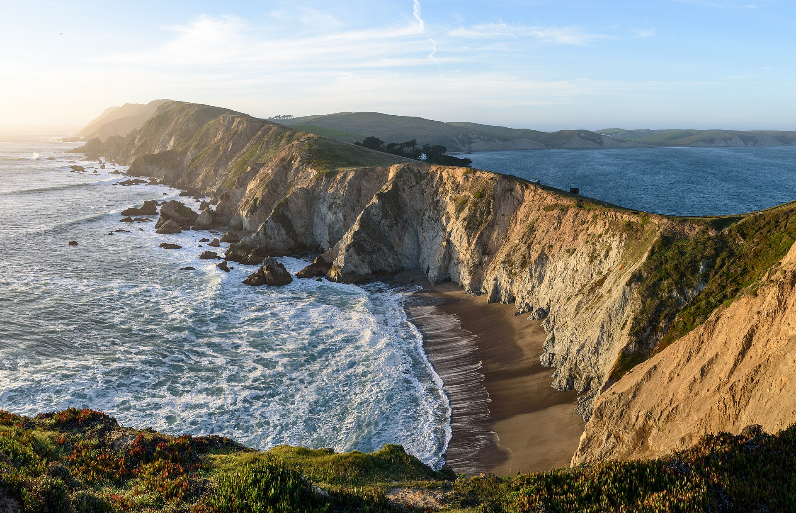

Point Reyes National Seashore is a coastal gem located just north of San Francisco. With its stunning cliffs, picturesque beaches, and diverse wildlife, it offers a perfect escape into nature.
The seashore stretches along the Point Reyes Peninsula, encompassing rugged coastal cliffs, rolling hills, and pristine beaches. It is home to a rich variety of ecosystems, including forests, wetlands, and grasslands, providing habitats for numerous plant and animal species.
Explore the miles of scenic hiking trails that crisscross the peninsula, offering breathtaking views of the coastline, wildflowers, and wildlife. Hike to the iconic Point Reyes Lighthouse, perched on the edge of a sheer cliff, and enjoy panoramic views of the Pacific Ocean. Don't forget to keep an eye out for whales and dolphins as they migrate along the coast.
Point Reyes is a haven for birdwatchers, with over 490 bird species recorded in the area. Look for shorebirds, raptors, waterfowl, and migratory birds as you explore the park. The park's wetlands, such as Abbotts Lagoon and Limantour Estero, are particularly rich in birdlife.
The beaches at Point Reyes are a true paradise. Whether you want to relax on the sandy shores, explore tide pools teeming with marine life, or witness the powerful crashing waves, there is a beach for every preference. Limantour Beach and Drakes Beach are popular choices, offering beautiful stretches of sand and opportunities for picnicking and beachcombing.
Point Reyes also has a rich cultural history. Visit the historic Point Reyes Lighthouse, which has guided ships along the coast for over a century. Explore the remnants of the historic dairy ranches that once operated in the area, or visit the Point Reyes National Seashore Association bookstore to learn more about the park's natural and cultural heritage.
Camping is available in the park, allowing you to immerse yourself in the beauty of Point Reyes. Wake up to the sound of waves crashing and enjoy the serenity of the natural surroundings. However, camping reservations are highly recommended, especially during peak seasons.
Point Reyes National Seashore is a place of stunning beauty and tranquility. Whether you're seeking outdoor adventures, wildlife encounters, or simply a peaceful retreat by the ocean, this seashore has something for everyone.